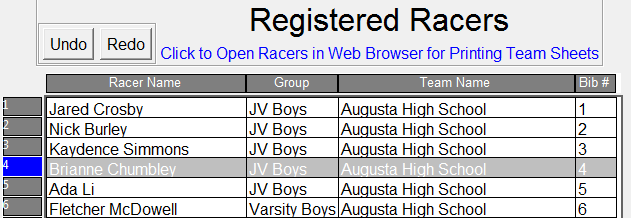
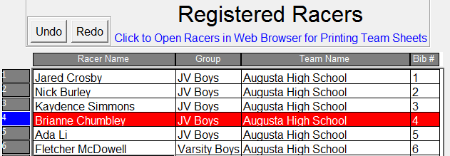
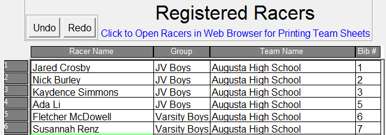
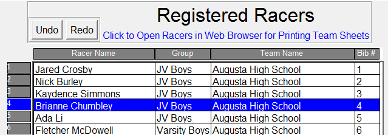
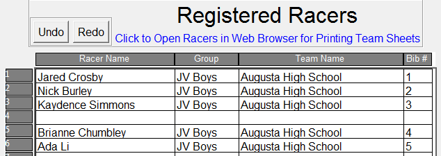

The Racers and Bibs/Timing sheets function similar to spreadsheet navigation with some key differences.
Protected cells (on the Bibs/Timing sheet) are highlighted in a tan color indicating the entries that are not allowed. Navigation to those cells is prevented or skipped over. With the exception of the DQ column, these cells are automatically calculated. Also depending on the mode (standalone, timer, bib entry), the Time, Abib#, or Bib# columns may be protected from changes.
Single cells can be moved up or down via a mouse click/hold and drag. Cells cannot be moved left or right. Use this technique, for example, to move Bib#’s up or down to make corrections to “close calls” when overriding the timing system’s order of recorded Bib#’s.
Select a full row via a left mouse button 'click-and-hold' on the row’s corresponding numbered row header located on the left. The selected row data turns grey. In the below example, row 4 is selected. 
Select row and drag left to delete To delete an entire row, select the row and drag the mouse left. The row to be deleted turns red, indicating an impending deletion. Once the left mouse button is released, the highlighted row is deleted. After seeing the red row, if you change your mind, simply drag the mouse up or down to change to a different row for deletion (as you drag up or down, the row chosen for deletion changes red) or drag the mouse back to the right, over the row header, to cancel the deletion. Once a row is deleted all succeeding successive rows below are moved up.
In the following example, row 4 has been selected and is awaiting deletion (once the left mouse button is released): 
Here is the state after the mouse is released: 
Select row and drag right to insert To insert a row, select the row and drag the mouse right. The row to be inserted turns blue, indicating an impending insertion. Once the left mouse button is released, the highlighted row is inserting. After seeing the blue row, if you change your mind, simply drag the mouse up or down to change to a different row for insertion (as you drag up or down, the row chosen for insertion changes blue) or drag the mouse back to the left, over the row header, to cancel the insertion. Once a row is inserted all succeeding successive rows below are moved down. Be aware, if there is any data in the last row (row 1500), it “falls off the end” and disappears.
In the following example, row 4 has been selected and is awaiting insertion (once the left mouse button is released):

Here is the state after the mouse is released: 
Multiple simultaneous rows can be selected for insertion or deletion by holding the shift button when selecting a row and dragging the mouse up or down on the row header.
Keyboard shortcuts for the Undo and Redo buttons are <control-z> (undo) and <control-r> (redo).
In the Bibs/Timing sheet, clicking a finisher’s corresponding DQ cell toggles the DQ attribute which changes whether the athlete is ruled as disqualified. This function is disabled in bib entry mode -- only the timer operator can DQ runner.
The Groups sheet is mostly a read-only sheet. However, populated cells in the Finish Status, Start Time, Finish Time, and Results column respond as toggles to left mouse clicks:
Clicking cells in the Finish Status or Finish Time column: For Groups with a designated “Start Time”, the Group’s “Finish Time” (Finish Status of “Not Yet Finished” or “Finished”) can be toggled as set or unset by clicking the Group’s corresponding “Finish Time” or “Finish Status” cell. This toggles whether the race result calculations are based on a projection (if not marked finished) or based on final, official, scoring (if marked finished).
Clicking cells in the Start Time column: For Groups with a Finish Status of “Not Yet Finished”, the race can be un-started by clicking in the corresponding Group’s “Start Time”.
Clicking cells in the Results column: Clicking here toggles whether a group's results are "enabled" or "disabled". Disabled groups will not output or publish result files. This can come in useful if you want to support having multiple race files (with the same registered racers) for the same event (you may want to do that if one of the group's needs a different team size configuration than the rest).